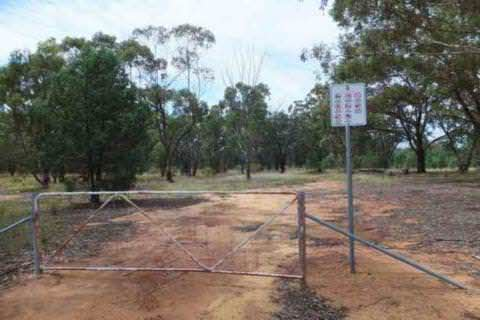

PHONE
PHONE GET DIRECTIONS
GET DIRECTIONS-

- 
-

OPENING HOURS: Not applicable - no booking necessary.
COORDINATES: 32º19’48.24â€S, 148º46’1.25â€E
LOCATION: Wongarbon is on the Mitchell highway between Dubbo and Wellington.
OPENING HOURS: Not applicable - no booking necessary.
COORDINATES: 32º19’48.24â€S, 148º46’1.25â€E
LOCATION: Wongarbon is on the Mitchell highway between Dubbo and Wellington.